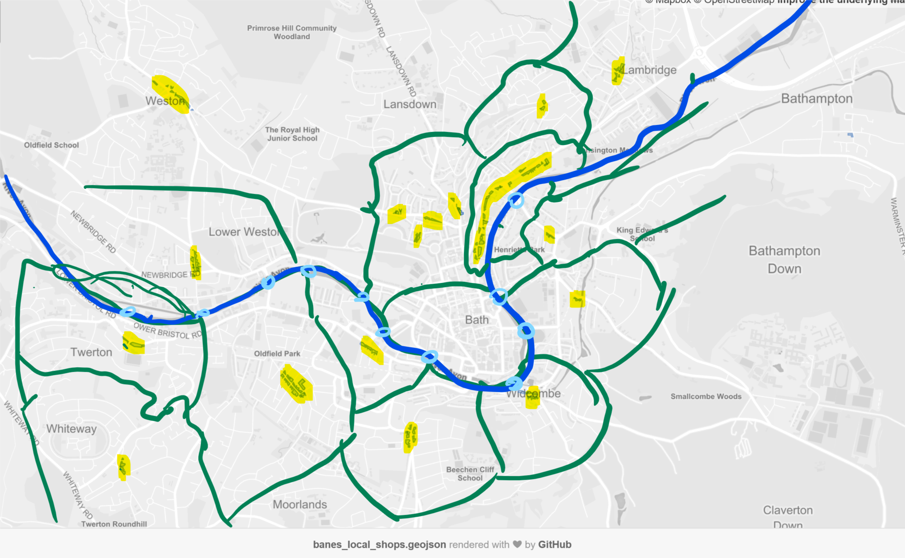
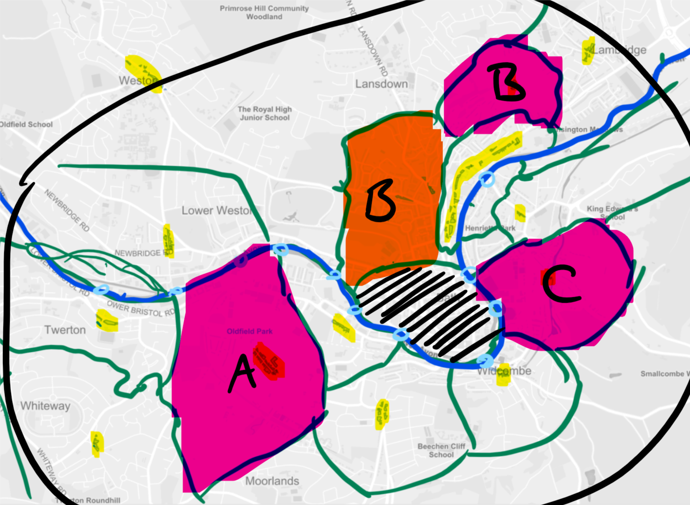

Better Maps for a Digital City
Bounding box SW -2.42537,51.32993 NE -2.30081,51.41205
Concept
Dynamically generate catchment areas around local high streets, intersect with the accessibilty data from Wheelmap, then provide a grade for each "local area" per type of establishment
Goal is to provide a rough guide on where to visit if you or a friend use a wheelchair or have limited mobility
 Reality
There's a lot of data... so we put it on Carto
https://getrcarter.carto.com/builder/301b4a3f-f3e4-485f-961c-56b6d74fb179/embed